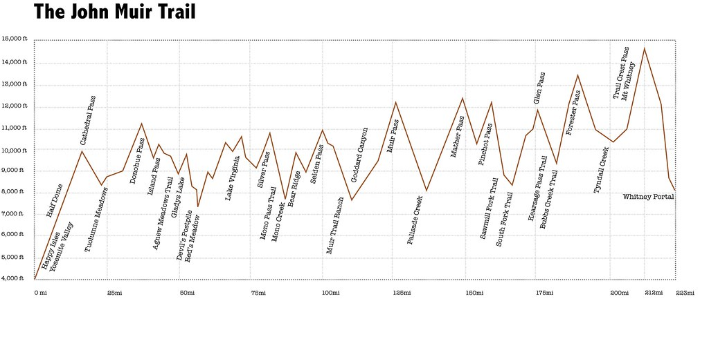
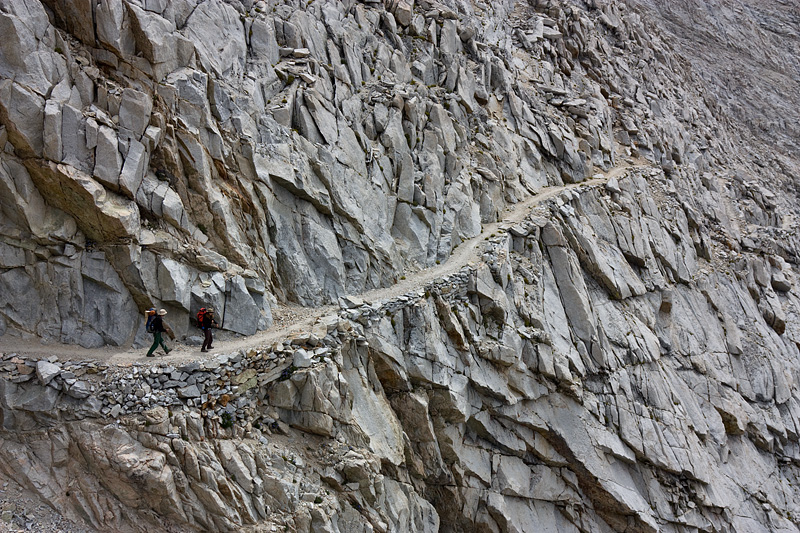

The Route
The John Muir Trail starts in Yosemite National Park and travels south for 211 miles, ending at the summit of Mount Whitney. Along the way, hikers will pass through three national parks, two national forests, and some of the most beautiful wilderness areas in the United States.
Points of Interest
There are many stunning natural wonders to see along the John Muir Trail, including Yosemite Valley, the Ansel Adams Wilderness, and the Evolution Basin. Hikers will also encounter several high mountain passes, such as Muir Pass and Forester Pass, which offer breathtaking views of the surrounding peaks and valleys.
